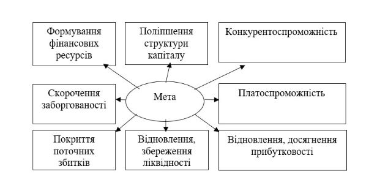
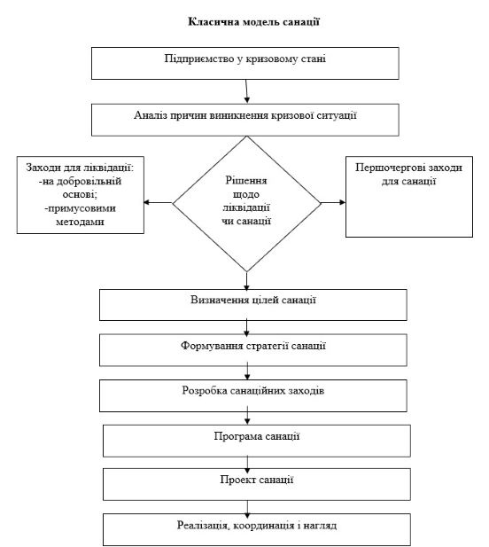
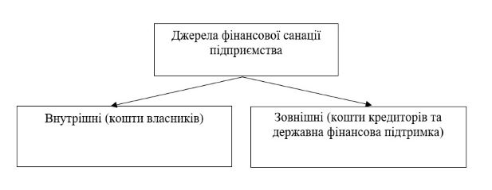

План
1. Криза підприємства: економічний зміст і фактори, що її зумовлюють.
2. Економічна сутність санації, мета та джерела.
3. Банкрутство підприємства: підстави і наслідки.
1. Криза підприємства: економічний зміст і фактори, що її зумовлюють
Термін «криза підприємства» охоплює різноманітні сторони життєвого циклу підприємства – від елементарних перешкод у функціонуванні підприємства через конфлікти до ліквідації підприємства.
Під фінансовою кризою розуміють період розбалансованої діяльності підприємства та обмежених можливостей його впливу на фінансові відносини.
Фактори, які можуть викликати фінансову кризу на:
1. До зовнішніх факторів (які не залежать від діяльності підприємства) належать: спад в економіці загалом, інфляція, нестабільність господарського та податкового законодавства, а також фінансового та валютного ринків, посилення конкуренції в галузі, криза окремої галузі, політична нестабільність у країні чи в країнах-постачальниках сировини.
2. До внутрішніх факторів (які залежать від його діяльності)належать: брак чітко визначеної стратегії в розвитку підприємства; низький рівень організаційної структури, менеджменту, маркетингу та втрата ринків збуту, незадовільне використання виробничих ресурсів, утримання зайвих робочих місць.
Усі ці причини тісно взаємопов’язані. Типовими наслідками впливу названих причин на фінансово-господарський стан підприємства є:
- втрата клієнтів та покупців готової продукції;
- зменшення кількості замовлень і контрактів з продажу продукції;
- підвищення собівартості та різке зниження продуктивності праці;
- збільшення розміру неліквідних оборотних засобів і наявність понаднормових запасів;
- виникнення внутрішньовиробничих конфліктів і зростання плинності кадрів;
- підвищення тиску на ціни і зменшення обсягів реалізації.
Види кризи:
1) стратегічна криза (коли на підприємстві зруйновано виробничий потенціал і це призводить до незадовільної структури балансу);
2) криза прибутковості (коли збитки з’їдають власний капітал);
3) криза ліквідності (коли підприємство є неплатоспроможним).
2. Економічна сутність санації, мета та джерела
Санація - система заходів, які здійснюються в період проведення справи про банкрутство з метою попередження визнання боржника банкрутом і його ліквідації, спрямована на оздоровлення фінансово-господарського стану боржника, а також задоволення в повному обсязі або частково вимог кредиторів шляхом кредитування, реструктуризації підприємства, боргів і капіталу й (або) зміни організаційно-правової й виробничої структури боржника.
Типи санаційних заходів:
- фінансово-економічні - відображають фінансові відносини, що виникають у процесі мобілізації й використання внутрішніх і зовнішніх фінансових джерел оздоровлення підприємства;
- виробничо-технічні - методи санації пов’язані, насамперед, з модернізацією й відновленням виробничих фондів, зі зменшенням простоїв і підвищенням ритмічності виробництва, підвищенням якості продукції й зниженням її собівартості;
- організаційно-правові - методи спрямовані на вдосконалювання організаційної структури підприємства, організаційно-правових форм бізнесу, підвищення якості менеджменту тощо;
- соціальні - методи соціального значення спрямовані на утворення й фінансування системи перепідготовки кадрів, пошук і пропозицію альтернативних робочих місць, додаткових виплат по безробіттю.
Метою фінансової санації є покриття поточних збитків і усунення причин їхнього виникнення, поновлення й збереження ліквідності й платоспроможності підприємств, скорочення всіх видів заборгованості, поліпшення структури оборотного капіталу й формування фондів фінансових ресурсів, необхідних для проведення заходів що до санації.
Залежно від глибини кризового стану підприємства й умов надання йому зовнішньої допомоги, розрізняють два основних види санації:
1. Без зміни статусу юридичної особи, що санується (така санація здійснюється звичайно для допомоги підприємству в усуненні його неплатоспроможності, якщо його кризовий стан розглядається як тимчасове явище).
2. Зі зміною статусу юридичної особи, що санується (ця форма санації називається реорганізацією підприємства й вимагає здійснення реорганізаційних процедур, пов’язаних зі зміною його фор ми власності, організаційно-правової форми діяльності й т.п. Вона здійснюється при більш глибокому кризовому стані підприємства).
Санація підприємства проводиться в таких випадках:
- до порушення кредиторами справи про банкрутство, якщо підприємство, намагаючись вийти з кризового стану, вдається до зовнішньої допомоги зі своєї ініціативи;
- якщо саме підприємство, звернувшись до господарчого суду із заявою про своє банкрутство, одночасно пропонує умови своєї санації (такі випадки санації найбільш характерні для державних підприємств). Рішення про санацію ухвалюється, якщо підприємство довело, що воно є санаційноздатним;
- якщо рішення про проведення санації виносить господарчий суд за пропозиціями, що надійшли від фізичних і юридичних осіб, які бажають задовольнити вимоги кредиторів до боржника й виконати його зобов’язання перед бюджетом;
- з ініціативи фінансово-кредитної установи, що відповідно до законодавства має право застосовувати комплекс заходів щодо санації, у тому числі: передавати оперативне управління адміністрації, сформованій при участі банку; реорганізовувати боржника; змінювати порядок платежів; направляти виручку від реалізації на погашення кредиторської заборгованості;
- з ініціативи заставоутримувача майнового комплексу підприємства;
- з ініціативи Державного органу з питань банкрутства, коли мова йде про державні підприємства;
- з ініціативи Національного банку України - відносно фінансового оздоровлення комерційного банку.
Згідно з класичною моделлю процес фінансового оздоровлення підприємства починається з виявлення та аналізу фінансової кризи на підприємстві. На основі первинних бухгалтерських документів визначаються зовнішні та внутрішні фактори кризи, а також реальний фінансовий стан підприємства.
Джерела санації:
Здійснення санації передбачає наявність відповідних джерел фінансування. Всі джерела фінансової санації поділяють на внутрішні та зовнішні:
До внутрішніх джерел фінансової санації належать власні фінансові ресурси, які спрямовуються насамперед на покращення або відновлення платоспроможності та ліквідності підприємства, що здійснюється зазвичай за такими напрямами: реструктуризація активів; зменшення витрат; збільшення обсягів надходжень від реалізації продукції (робіт, послуг).
Використання внутрішніх фінансових ресурсів та інструментів стабілізації дозволяє не тільки суттєво знизити загрозу банкрутства, а й значною мірою зменшує потребу в залученні зовнішніх джерел фінансування. По-перше, у зв'язку, з тим, що здійснення капітальних інвестицій є частиною процесу фінансового оздоровлення підприємства, внутрішні джерела санації збігаються з внутрішніми джерелами фінансування капітальних інвестицій, до яких належать такі: прибуток від реалізації основної продукції, основних засобів, нематеріальних активів і матеріальних цінностей, надходження від здавання майна в оренду, інших позареалізаційних операцій, а також амортизаційні відрахування. По-друге, використання внутрішніх фінансових ресурсів є обов'язковою умовою залучення додаткового капіталу із зовнішніх джерел.
У фінансовій санації кредитори можуть брати участь шляхом:
- надання додаткових кредитних ресурсів;
- пролонгації та реструктуризації наявної заборгованості;
- надання кредитного забезпечення (порука, гарантії);
- трансформації боргу у власність тощо.
Ще однією з форм санації з боку кредиторів може бути погашення боргу за рахунок цільового банківського кредиту, що надається комерційним банком, який обслуговує боржника. Надається такий кредит на умовах підвищеної відсоткової ставки, оскільки це пов'язано з високим ризиком.
Крім кредиторів, у фінансовій санації підприємства може брати участь і його персонал. Це зумовлено необхідністю збереження робочих місць на підприємстві.
Основними формами фінансування санації з боку персоналу підприємства можуть бути:
- придбання акцій підприємства працівниками;
- відмова від дивідендів та винагороди за виробничі результати;
- надання працівниками позик підприємству.
Фінансову підтримку санації збитковим державним підприємствам може надавати і держава за умови, що мобілізованих з децентралізованих джерел фінансових ресурсів не вистачило для проведення санації збиткового підприємства, а продукція, що виробляється, суспільно необхідна.
Державна фінансова підтримка санації підприємств може здійснюватися такими шляхами:
- пряме бюджетне фінансування санації у вигляді надання субсидій, дотацій, повного або часткового викупу державою акцій підприємства, яке перебуває на межі банкрутства. Воно зазвичай здійснюється у випадках, коли підприємство зазнало збитків від стихійного лиха, і вони не відшкодовані органами страхування;
- надання бюджетних позик.
Крім прямого бюджетного фінансування санації, держава може використовувати й непрямі методи фінансової підтримки підприємств:
1) надання антимонопольним комітетом дозволу на інтеграцію підприємств-конкурентів або поєднання їх інтересів;
2) надання державних гарантій і державне страхування кредитів;
3) регулювання механізму ціноутворення;
4) зниження податкового тиску, списання податкових зобов'язань;
5) відстрочення і розстрочення за платежами до бюджету на умовах податкового кредиту;
6) стимулювання лізингової форми фінансування виробничо- технічних санаційних заходів;
7) активізація участі в санації кредиторів з найбільшою заборгованістю;
8) проведення цільових кредитних аукціонів НБУ під програми фінансування санації виробництва.
Державна підтримка санації підприємств тим чи іншим методом залежить від їх конкретних характеристик національного та регіонального значення, глибини фінансової кризи.
3. Банкрутство підприємства: підстави і наслідки
Санаційна неспроможність підприємства є підставою для оголошення його банкрутом і початку процесу ліквідації.
Донедавна для більшості вітчизняних суб’єктів господарювання процеси банкрутства були маловідомі. Лише в період становлення ринкової економіки і ліквідації планового розподілу використання грошових ресурсів, властивого для планової економіки, відчутними стали такі економічні явища, як нерентабельність, неплатоспроможність підприємств. На сучасному етапі частка збиткових підприємств в економіці України є значною - близько 38-40%. Тенденції до банкрутства поширюються не лише на окремих суб’єктів господарювання, а й на галузі економіки (наприклад, сільське господарство, яке впродовж тривалого періоду перебуває в глибокій фінансовій кризі і де понад 85% господарюючих суб’єктів закінчують діяльність щорічно зі збитками; в промисловості збитковим є кожне друге підприємство).
Банкрутство (від італ. «banco» - «банк» + «rotto» - «зламаний») - це неспроможність підприємства погасити власну заборгованість. У цьому разі право користування активами підприємства переходить від їхніх власників до держателів боргових зобов’язань, тобто кредиторів.
Банкрутство - це один із головних елементів ринкової економіки, тому ситуація банкрутства підприємств є типовою для економіки не лише країн, що розвиваються, а й будь-якої розвинутої.
Банкрутство - це визнана господарським судом неспроможність боржника відновити власну платоспроможність та задовольнити визнані судом вимоги кредиторів не інакше, як через застосування ліквідаційної процедури (Закон України «Про відновлення платоспроможності боржника або визнання його банкрутом»).
Види банкрутства:
• приховане - коли підприємство приховує факт фінансової неспроможності та подає неправдиву інформацію про фінансовий стан;
• фіктивне - коли підприємство є платоспроможним, однак заявляє про банкрутство з метою отримання від кредиторів відтермінування платежів або зменшення боргів;
• навмисним - коли керівник або власник підприємства навмисне або в чиїхось інтересах доводить підприємство до банкрутства.
За неправдиву інформацію щодо фінансового стану боржника перед кредиторами винні особи караються штрафом, а при завданні великої шкоди позбавленням волі та конфіскацією майна.
В Україні процедура банкрутства визначена Законом України № 784-XIV «Про відновлення платоспроможності боржника або визнання його банкрутом» від 30. 06. 1999 р., який набув чинності з 1 січня 2000 р. (для сільськогосподарських товаровиробників - з 1 січня 2004 р.).
У разі порушення справи про банкрутство виникає комплекс процесуальних правовідносин:
• провадження у справі;
• визнання боржника банкрутом;
• оголошення про банкрутство;
• задоволення претензій кредиторів;
• припинення справи про банкрутство тощо.
Сукупність таких процесуальних правовідносин може розглядатися як ліквідаційний правовий процес щодо суб’єкта підприємництва.
Господарський суд визнає боржника банкрутом за відсутності пропозицій щодо проведення санації або незгоди кредиторів з її умовами. У постанові про визнання боржника банкрутом господарський суд призначає також ліквідаторів (ліквідаційну комісію) - представників зборів кредиторів, банків, фінансових органів, а також Фонду державного майна, якщо банкрутом є державне підприємство.
З моменту визнання боржника банкрутом:
• припиняється підприємницька діяльність боржника;
• до ліквідаційної комісії переходить право розпорядження майном банкрута й усі його майнові права та обов’язки;
• вважаються такими, що минули, терміни всіх боргових зобов’язань банкрута;
• припиняється нарахування пені та процентів на всі види заборгованості банкрута.
Суттєвим є те, що господарський суд на подання боржника, розпорядника майна або кредиторів може визнати недійсною будь-яку операцію з продажу майна боржника, здійснену протягом трьох місяців до початку провадження справи про банкрутство, якщо її здійснено в інтересах пов’язаної з боржником особи. Крім того, може бути анульовано будь-яку угоду боржника щодо продажу майна чи прийняття боргових зобов’язань протягом одного року до початку провадження справи про банкрутство, якщо продаж майна здійснено з метою його приховування або несплати боргів, коли боржник у результаті угоди отримав набагато менше, ніж становить реальна ціна майна, а також тоді, коли боржник на момент укладання угоди вже був фактично неплатоспроможним чи став таким унаслідок виконання цієї угоди.
Ліквідаційна комісія (орган, що проводить ліквідацію) оцінює наявне майно підприємства, що ліквідується, проводить роботу зі стягнення дебіторської заборгованості й розраховується з кредиторами, складає ліквідаційний баланс та подає його власнику або органу, який призначив ліквідаційну комісію. Достовірність та повнота ліквідаційного балансу мають бути підтверджені аудитором (аудиторською фірмою), за винятком тих організацій, що повністю утримуються за рахунок бюджету і не здійснюють підприємницької діяльності.
Проте нині для України характерною є ситуація, коли ліквідаційна комісія складається з представників банків-кредиторів, енергетичних компаній та податкових адміністрацій. Вони абсолютно незацікавлені у збереженні боржника, і вся їхня робота спрямована на продаж найбільш ліквідної частини майна - того, на чому базується діяльність підприємства.
Кошти, виручені від продажу майна банкрута, спрямовуються на задоволення претензій кредиторів. Розрахунки з кредиторами ліквідатор здійснює відповідно до реєстру їхніх вимог. За Законом України «Про відновлення платоспроможності боржника або визнання його банкрутом» (далі - Закон) встановлено шість черг задоволення вимог кредиторів банкрута. Вимоги кожної черги задовольняються відповідно до надходження на рахунок грошей від продажу майна банкрута після повного задоволення вимог попередньої черги. У разі недостатності коштів, одержаних від продажу майна банкрута, для повного задоволення всіх вимог однієї черги вимоги задовольняються пропорційно до суми вимог, що належать кожному кредиторові однієї черги.
Черговість задоволення вимог кредиторів регулюється за ст. 31 Закону.
Зокрема, першочергово задовольняються вимоги, забезпечені заставою; витрати Фонду гарантування вкладів фізичних осіб, пов’язані з набуттям ним прав кредитора щодо банку; витрати, пов’язані з провадженням у справі про банкрутство в господарському суді та роботою ліквідаційної комісії, а також вимоги щодо виплати заборгованості із заробітної плати за три місяці роботи, що передують порушенню справи про банкрутство чи припиненню трудових відносин у разі звільнення працівника до порушення зазначеної справи, грошової компенсації за всі невикористані дні щорічної відпустки та додаткової відпустки працівникам, які мають дітей, право на які виникло протягом двох років, відпрацьованих до порушення справи про банкрутство чи припинення трудових відносин, інших коштів, належних працівникам у зв’язку з оплачуваною відсутністю на роботі, право на які виникло протягом трьох останніх місяців до порушення справи про банкрутство чи припинення трудових відносин, а також вихідної допомоги, належної працівникам у зв’язку з припиненням трудових відносин, у тому числі відшкодування кредиту, отриманого на ці потреби.
Лише після задоволення вимог цих кредиторів задовольняються всі інші вимоги, що виникли на основі зобов’язань банкрута перед працівниками підприємства-банкрута (тобто у другу чергу). Проте при цьому, згідно з ч. 6 ст. 31 Закону вимоги, не задоволені за недостатністю майна, вважаються погашеними.
Майно, що залишилось після задоволення претензій кредиторів і членів трудового колективу, використовується відповідно до рішення власника. У разі реорганізації підприємства його права та обов’язки переходять до правонаступників. Якщо внаслідок повної ліквідації підприємства власники корпоративних прав, емітованих цим підприємством, одержують засоби або майно, вартість яких перевищує балансову (номінальну) вартість таких корпоративних прав, сума перевищення зараховується в оподатковуваний дохід таких осіб. Коли сума засобів або вартість одержаного майна є меншою за номінальну вартість корпоративних прав, сума збитків передбачається у валових витратах власника, але не раніше повної ліквідації підприємства- емітента. Підприємство вважається реорганізованим або ліквідованим з моменту вилучення його з державного реєстру України.
На підставі результатів діяльності ліквідаційна комісія складає ліквідаційний баланс і подає його на затвердження до господарського суду.
Якщо за результатами ліквідаційного балансу після задоволення вимог кредиторів не залишилося майна, суд виносить ухвалу про ліквідацію юридичної особи - банкрута. Якщо майна банкрута вистачило, щоб задовольнити всі вимоги кредиторів, надалі він вважається вільним від боргів і може продовжити підприємницьку діяльність.
Питання для самоконтролю:
1. Наведіть основні симптоми фінансової кризи.
2. Дайте визначення санації підприємства.
3 Визначте мету фінансової санації, охарактеризуйте її основні види.
4. Назвіть випадки, коли підприємству потрібно проводити санацію.
5. Охарактеризуйте джерела санації.
6. Дайте визначення поняття «банкрутство», розкрийте види банкрутства.
7. Сформулюйте основні підстави для порушення справи про банкрутство підприємства-боржника.
8. Назвіть черговість задоволення умов кредиторів згідно з чинним законодавством України.
9. Сформулюйте основні обов’язки арбітражного керуючого (розпорядника майном, керуючого санацією, ліквідатора) при порушенні справи про банкрутство.
Література:
1. Бердар М. М. Фінанси підприємств: навчальний посібник / М.М. Бердар. – К.: Центр учбової літератури, с. 312-336.